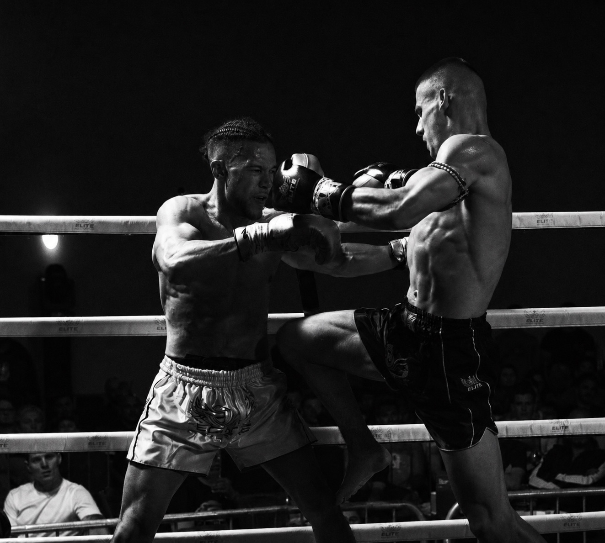

Kamil Fornalski
My passion for martial arts began at the age of 14 when I started boxing recreationally. The skills I developed during those early years later became the foundation for my journey into Muay Thai.
I joined MSA in 2020, with my competitive journey beginning in 2021 after the COVID-19 pandemic. My first fight completely changed my perspective and sparked my passion for competing.
My biggest achievement to date is winning silver at the 2026 WMF World Championships. Muay Thai has taught me discipline and resilience while giving me the opportunity to travel internationally and compete against fighters from around the world, including in Thailand.
My main strengths are powerful boxing and strong kicks, but I enjoy using the full range of Muay Thai techniques. I believe every opponent requires a different approach, making adaptability an important part of my fighting style.